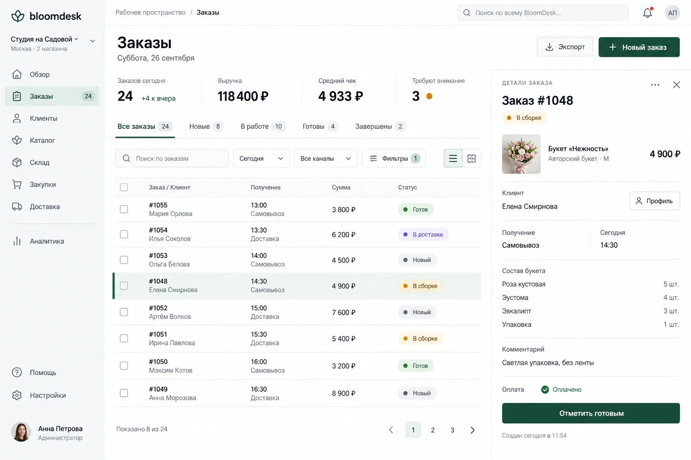
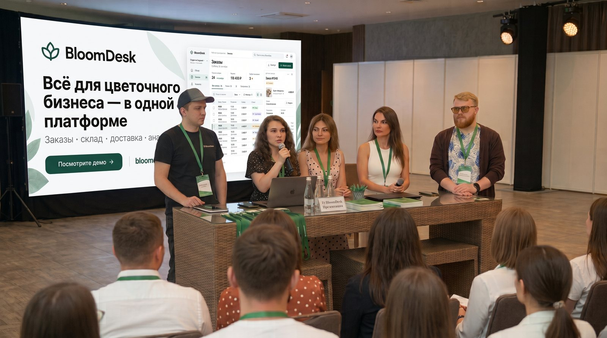
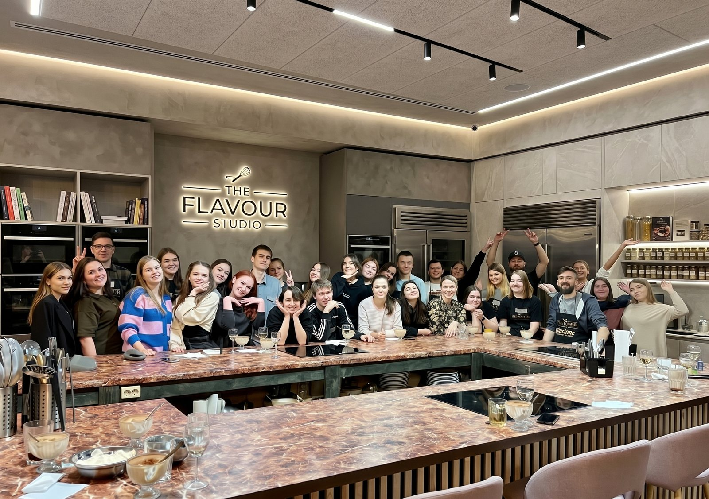

Собственная разработка
Проектируем, создаём и развиваем продукт внутри компании — от исследования задач до новых релизов.
Создаём и развиваем SaaS-платформу, которая автоматизирует заказы, склад, доставку и аналитику. Первое отраслевое решение BloomDesk создано для цветочного бизнеса.

BloomDesk — IT-компания. Цветочный бизнес — первая отрасль, для которой наша команда создаёт программное решение.
Проектируем, создаём и развиваем продукт внутри компании — от исследования задач до новых релизов.
Пользователи работают с BloomDesk через единый цифровой сервис с облачным доступом.
Продукт, разработка, поддержка и операционные направления работают как единая команда.
Переводим ручные операции в понятные цифровые процессы и помогаем бизнесу работать системно.
На первом экране — заказы. Здесь можно посмотреть три других модуля: склад, доставку и аналитику.
Остатки, резервы и предупреждения о минимальном количестве — в одном экране.
Отраслевые процессы представлены как связанные модули цифровой системы, а не как набор разрозненных инструментов.
Единая очередь, статусы, сроки, предзаказы и контроль выполнения.
Остатки, расходные материалы и автоматизированное списание.
Структурированный расчёт затрат и маржинальности каждого заказа.
Слоты, маршруты, статусы доставки и информация для команды.
Продажи, динамика, остатки и отчёты для управленческих решений.
Роли, разрешения и единая рабочая среда для разных специалистов.
Мы развиваем BloomDesk как технологический продукт: исследуем процессы, проектируем интерфейсы, выпускаем обновления и поддерживаем пользователей.
Разбираемся в задачах и сценариях пользователей.
Превращаем требования в понятный интерфейс и надёжный код.
Собираем обратную связь и улучшаем продукт после запуска.
Небольшой взгляд на людей и работу вокруг продукта — без лишних деталей.




Люди и идеи, стоящие за цифровым продуктом.
Открыты вакансии в операционном направлении и поддержке пользователей SaaS-платформы BloomDesk.
Контроль статусов и сроков заказов, выявление отклонений и передача вопросов ответственным специалистам.
Помощь пользователям BloomDesk в текстовом чате по вопросам заказов, склада, отчётов и работы с платформой.
Основное о работе BloomDesk и подключении команды.
Платформа связывает заказы, складские остатки, сборку, доставку и управленческую аналитику.
Нет. BloomDesk работает как облачный сервис: команда входит в рабочее пространство через браузер.
Сначала мы знакомимся с процессами бизнеса, затем настраиваем рабочее пространство, роли и доступы команды.
Да. В одном рабочем пространстве можно вести процессы нескольких магазинов.
Расскажем о платформе, покажем основные модули и обсудим задачи вашего бизнеса.